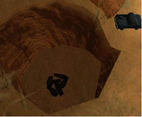

Las Venturas
 De: La Frikipedia, la enciclopedia extremadamente seria.
De: La Frikipedia, la enciclopedia extremadamente seria.
| De la serie ciudades del mundo:
|
| Las Venturas
|
|
|
|
| (Bandera)
|
(Escudo de armas)
|
|
| Topónimo oficial
|
GTA
|
| País
|
GTA
|
| Código postal
|
h
|
| Superficie
|
La del juego
|
| Altitud
|
No hay
|
| Distancia
|
Larga
|
| Fundación
|
2007
|
| Población
|
Virtual
|
| Gentilicio
|
Ventureños
|
| Alcalde
|
de Piedradura
|
| GTA
|
Las Venturas es una ciudad inspirada en Las Vegas, no hace falta talento para darse cuenta, creada por los de la Roca Estrella del Norte para el San Andreas.
Características
Cuenta con:
- Casinos.
- Tiendas de ropa.
- Casinos.
- Casinos gigantes.
- Supermercados.
- Más casinos.
- Bingos.
- Y con un poco de suerte encontrarás algún casino.
Curiosidades
Destacan muchos edificios en la ciudad como la pirámide del Camel´s Toe, con su lucecita ilumina aviones en la punta y con la esfinge cuya cara es totalmente inexpresiva o el Come-A-Lot o Come un lote; otro casino de forma curiosa que es igual que el castillo de Disneyland, es aquí donde el Pato Donald se gasta la pensión.
Misterios
 Sospehoso vehículo aparcado ahí al lado cuyo proprietario es culpable de tirar la basura en el contenedor equivocado
La provincia de Las Venturas o como ellos la llaman: Bone County, está llenita de misterios que nos han plantao los de la Rockstar para que un puñao de frikis se dejen las córneas en buscarlos y hacer videos para el Yútub:
- El Área 69: Es una burda copia del Área 51 de Nevada, que es una base militar super-secreta-que-te-cagas donde todo el mundo sabe que el ejército americano está creando una nueva raza de helados de sabor a Lima-Limón con Callos a la madrileña.
- La fosa común: Está ubicada bajo una montaña de estas típicas de la zona, con formas curiosas, donde se pueden encontrar algunas bolsas negras que presumiblemente no contienen basura. Se dice que fue utilizada para arrojar cadáveres de Kurdos cuando la guerra de Chimborizigistán.
- La Big Ear: O la Gran Oreja, es una antena de la Timofónica de dimensión que van contra todas las leyes de la física que se dice sirve para controlar el tráfico aéreo de ovnis de la zona. Hay quien dice haber oído mientras la sobrevolaba escuchando Radio X las voces de unos extraterrestres en contacto, yo opino que ese tío se ha pinchao demasiada cosa mala en vena y que el pobrecito sufre alucinaciones y
/o tiene alguna crisis psicosomática.
- Los Poblados Fantasma: Son las Brujas y Aldea Malvada que recrean lugares históricos de Estados Unidos de cuando estos se metían con los indios. Pues bien, hay quien afirma que se oyen ruidos de caballerías fantasmas por la zona ya que se manifiestan porque les duelen las hemorroides; no hay que olvidar amiguitos míos, que el San Andreas es un videojuego.
Autor(es):
- Azulejos
- Frikilalo
- ArreKarallo
- Dark temptation
- Harry El del Pote
- Enzo sacks
- ADrIaN1996
- Volver al futuro 2
- Llenadorde cambiosrecientes
- Shadowmura
Frikipedia 2005-2016, Licencia
GFDL 1.2 - Extraído por FrikiLeaks